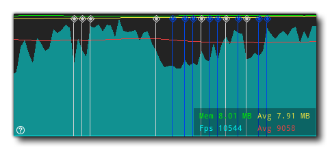
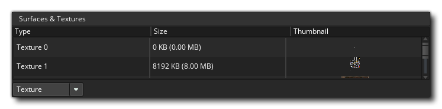
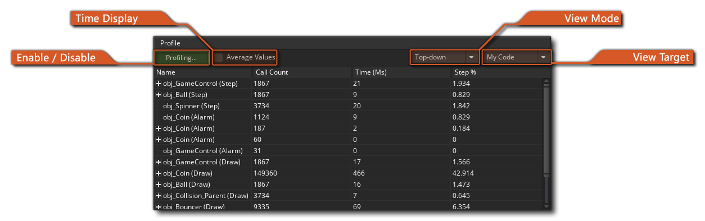
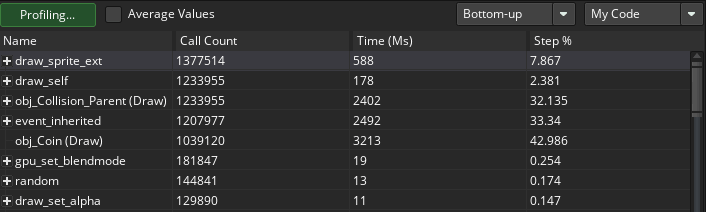

El depurador es una herramienta poderosa para revisar tu juego, y es especialmente útil para rastrear errores y errores en tu código, así como para verificar que los scripts se ejecuten cuando deberían, y que las variables y los arreglos contienen los valores que esperas, etc... Puede iniciar el depurador ejecutando su juego desde GameMaker Studio 2 IDE usando el botón Depurar  en la parte superior del IDE, o vaya al menú Generar y seleccione "Depurar".
en la parte superior del IDE, o vaya al menú Generar y seleccione "Depurar".
Cuando ejecutas un juego en modo de depuración, el IDE mostrará las diferentes herramientas disponibles para el depurador: 
La imagen que se muestra arriba muestra el diseño predeterminado para el depurador, pero al igual que con otros aspectos del IDE, puede personalizarlo para adaptarlo a sus necesidades, cerrar ventanas que no necesita o cambiar el tamaño de los documentos y las ventanas que sí necesita. Puede restablecer el diseño del depurador en cualquier momento, o volver a abrir ventanas cerradas, desde el menú contextual del depurador en la parte superior del IDE: 
A continuación explicamos para qué sirve cada sección del depurador:
La vista de gráfico muestra una visualización gráfica de cómo su proyecto está utilizando la memoria y su tasa de cuadros a lo largo del tiempo.:
El gráfico muestra el uso de memoria actual y promedio, así como el FPS actual y promedio a lo largo del tiempo, y puede acercar o alejar la imagen usando la
/
junto con la rueda del ratón
, y si coloca el cursor del mouse sobre cualquiera de los elementos del gráfico, le mostrará el valor de ese elemento en el punto seleccionado.
La vista de gráfico también mostrará ciertos eventos de depuración como puntos a lo largo de la longitud del gráfico. GameMaker Studio 2 genera estos eventos automáticamente en ciertos puntos de la ejecución de un juego para mostrar eventos importantes específicos, pero también puede agregar sus propios elementos gráficos mediante las funciones show_debug_message() y debug_event(). Los eventos del sistema se marcarán en un color diferente al de los eventos que se activan a través del código:  Al ejecutar el juego en depuración y pasar el ratón sobre estos eventos, se mostrará una lista de todos los eventos que se activaron en ese momento del juego, y tiene la opción de extraer la lista en una ventana separada para revisar haciendo clic en el botón Texto " Haga clic para abrir en una nueva ventana ":
La Vista de recursos le muestra una lista de todos los recursos que se utilizan en el proyecto que pueden contener código o acciones DnD™. Esta sección funciona de manera muy similar al Árbol de recursos y puede expandir los elementos en ella para mostrar más información, por ejemplo, los diferentes eventos para un objeto específico. A continuación, puede hacer doble clic
en cualquiera de los recursos para abrir el código para él en la ventana Vista de código, donde puede verificar los valores y agregar o eliminar puntos de interrupción.
Esta ventana mostrará la pila de eventos de la llamada actual, así como el número de línea para el código que se está pasando. El depurador deberá haberse pausado antes de que se muestre cualquier información aquí.
La barra de herramientas tiene los controles del depurador junto con cierta información básica como el uso de la memoria, el FPS actual (real) para el juego y un indicador para mostrar si el depurador está actualmente conectado o no (el indicador estará verde cuando esté conectado a una instancia en ejecución de su proyecto y de lo contrario rojo. Los controles disponibles son:
Esto vuelve a iniciar el juego después de que se haya detenido (atajo de teclado f5 ). Esto hará una pausa (romper) el juego. Reinicia el juego. Detiene el juego Entrar en un bloque de código o script (atajo de teclado f11 ). Paso sobre un bloque de código o script (atajo de teclado f10 ). Salga de un bloque de código o script (atajo de teclado + f11 ).
Active o desactive las actualizaciones en tiempo real para la información de depuración (esto está desactivado de forma predeterminada). Los primeros tres botones se utilizan para controlar tu juego, lo que te permite iniciarlo, pausarlo, reiniciarlo o detenerlo en cualquier momento. Cuando el juego está pausado (o bien haciendo clic en el botón Pausa o desde un punto de interrupción), puede usar los tres botones de "paso" para pasar por el código. Esto simplemente significa que puede decirle a su juego que ejecute la línea de código actual, luego pasar a la siguiente, lo que le permite ejecutar toda la línea de código una a la vez si lo desea. Normalmente, simplemente usaría el botón Paso a paso para hacer esto, pero también tiene uno para pasar sobre el código y otro para salir del código. Pasar por encima es útil cuando tiene scripts grandes para ejecutar, ya que al hacer clic en este se ejecutará todo el script o bloque de código como un solo paso y luego se detendrá en la siguiente línea, mientras que al salir saldrá de un script (se ejecutarán, pero todos a la vez) y pare en el siguiente paso después cuando cambie el alcance. El icono final permite que la ventana de depuración actualice sus datos en tiempo real, para que pueda ver cómo cambian las variables o se crean y destruyen las instancias a medida que ocurren. Tenga en cuenta que esto puede afectar el rendimiento de los juegos y que no toda la información está disponible en tiempo real. Por ejemplo, la visualización del estado de renderización (ver la sección de Relojes, a continuación) no se puede ver en tiempo real.
La vista de código es donde podemos ver y revisar diferentes scripts o códigos de eventos de nuestro proyecto mientras se ejecuta. Por defecto esto comienza vacío, pero puede hacer doble clic
También puedes usar el botón derecho del ratón.
para abrir el menú contextual, que también le permite agregar o eliminar puntos de interrupción y copiar cualquier código seleccionado al portapapeles.
Más información sobre BreakPoints se puede encontrar más abajo en esta página.
La idea general del depurador es permitirle "ver" cada detalle de su juego. Esto se hace usando "ventanas de observación" que, de forma predeterminada, se abren en la ventana de Salida acoplada en la parte inferior del IDE. Puede hacer clic en cada una de las diferentes pestañas para ver los relojes que contienen, algunos de los cuales se actualizarán en tiempo real (como los relojes globales), mientras que otros (como los relojes locales) requerirán que el depurador haya pausado el juego. Hemos enumerado cada una de las ventanas de visualización aquí por separado junto con una explicación de lo que hacen:
La ventana Locales muestra las propiedades del paso actual, que incluye el nombre del evento (o script) actual que se está ejecutando, el desplazamiento en el código de la máquina virtual para el script actual (el acrónimo "PC" es para "contador de programas"), instancia "self" que ejecuta el bloque de código y la instancia "other" en el evento. Esta última parte solo es válida siempre que el evento sea un evento de colisión o haya una with utilizado en el código. Si la instancia está en colisión, "otro" mostrará la otra instancia (y sus variables) en la colisión, pero si es una with entonces la instancia "Self" se convierte en la que ejecuta el código, mientras que "Other" es la instancia que realmente contiene el código. with. En cualquier otro momento, "otro" simplemente mostrará los mismos datos que "Yo". Después de toda esta información, encontrará una lista de todas las variables locales que actualmente están declaradas para el bloque de código que se está avanzando. Si haces click derecho
La ventana Globales mostrará una lista de todas las variables globales declaradas actualmente y sus valores. Si haces click derecho
Esta ventana es para que usted agregue una variable específica de la que desee realizar un seguimiento. Esta puede ser una variable de alcance de instancia o global, una variable incorporada o incluso una matriz o estructura de datos. Si el código de instancia que se está recorriendo tiene la variable observada, se mostrará aquí, lo que significa que puede realizar un seguimiento de un valor fácilmente sin tener que buscarlo en las ventanas Locales o Globales. Si haces click derecho
Como su nombre lo indica, esta ventana mostrará todas las variables de instancia, las variables locales y las variables integradas asociadas con la instancia que actualmente se está avanzando en la ventana Fuente (si se hace referencia a una instancia con la palabra clave "otro" o la with declaración, entonces esta ventana mostrará las propiedades de las instancias en su lugar).
Si necesita ver todas las instancias que están actualmente en la sala, puede seleccionar esta ventana y aparecerán en la lista. También puede ver el estado de las variables integradas o de instancia que tienen, y puede hacer clic derecho
Esta ventana es para cuando seleccionas una instancia de tu juego. Esto se hace simplemente pausando el juego y luego haciendo clic en cualquier instancia visible dentro de la ventana del juego. La instancia que se encuentra debajo del cursor del mouse tendrá su información mostrada en la ventana Instancia seleccionada, donde puede ver las variables de instancia e integradas, lo mismo que para la ventana Instancias.
Este reloj muestra toda la información disponible para el estado del fotograma actual que se está renderizando, como el dibujo alfa o el color de relleno. Esto no se puede actualizar en tiempo real, por lo que deberá pausar el juego para obtener y actualizar los detalles del marco.

Este reloj le permite ver exactamente lo que se dibuja en cualquier superficie que tenga en su juego (incluida la application surface ) así como ver las páginas de texturas que están en la memoria. Puede seleccionar texturas o superficies desde la parte inferior del reloj, y luego pasar el mouse sobre la textura o el ID de la superficie para que se muestre en una ventana emergente.
Tenga en cuenta que el depurador debe estar en pausa antes de que estos se actualicen.
Esta ventana es donde puede ver el perfil actual del sistema para el juego que se está probando, donde puede revisar todo en su juego, desde eventos completos hasta llamadas de función individuales para ver cómo se están desempeñando y detectar cualquier área problemática o cuellos de botella. Para más información sobre perfiles, consulte la sección más abajo en esta página.
Si has inicializado algunos búferes en tu juego, esta ventana te mostrará los datos del búfer. Puede seleccionar cualquier búfer creado configurando el valor de Id. De búfer, que comenzará en 0 para el primer búfer creado en su juego, e incrementará en 1 para cada búfer consecutivo.
Si haces click derecho


Es importante tener en cuenta que, mientras se ejecuta el juego , no actualiza las ventanas de depuración con valores variables y otros detalles de forma predeterminada, por lo tanto, primero debe usar el botón Pausa  en el Depurador para pausar el juego antes de que Locals, Globals y otros datos estén disponibles, o habilite la actualización en tiempo real desde los íconos en la parte superior
en el Depurador para pausar el juego antes de que Locals, Globals y otros datos estén disponibles, o habilite la actualización en tiempo real desde los íconos en la parte superior  . La única excepción a esta regla es la vista de Perfil, que se actualiza en tiempo real cuando se habilita independientemente del interruptor en tiempo real, ya que tiene su propio botón de encendido / apagado.
. La única excepción a esta regla es la vista de Perfil, que se actualiza en tiempo real cuando se habilita independientemente del interruptor en tiempo real, ya que tiene su propio botón de encendido / apagado.
Tipos de datos
Cuando está viendo una variable en cualquiera de las ventanas, puede ser uno de los múltiples tipos de datos. Sin embargo, debido a la forma en que GameMaker Studio 2 almacena ciertas cosas, el Depurador no siempre sabe exactamente qué contiene la variable. Esto se debe a que los valores de ID internos para las estructuras o instancias de datos son enteros, por lo que el Depurador no siempre sabe si el valor entero que se almacena en una variable es para una estructura de datos o una instancia o simplemente es un valor entero. Por esa razón, puedes hacer click derecho  en cualquier valor de variable y obtenga una ventana emergente que enumera los tipos de datos disponibles que podría ser esta variable.
en cualquier valor de variable y obtenga una ventana emergente que enumera los tipos de datos disponibles que podría ser esta variable. 
Las cadenas y los arreglos no permiten esta opción, y vale la pena señalar que incluso si una estructura de datos se almacena en una variable de instancia, su número de ID es global, por lo que si tiene cuatro instancias y cada una crea una lista ds (por ejemplo), cada lista tendrá una identificación de 0 a 3, y no todas serán 0.
Una vez que haya seleccionado su tipo de datos, la variable mostrará las entradas en la estructura simplemente haciendo clic en el botón pequeño.  junto a su nombre. Esto ampliará el contenido de las estructuras y, en el caso de la ventana "Relojes", también le permitirá modificarlos.
junto a su nombre. Esto ampliará el contenido de las estructuras y, en el caso de la ventana "Relojes", también le permitirá modificarlos.
Puntos de interrupción
Un punto de interrupción es un lugar en el código de su proyecto en el que desea que se detenga para que pueda ver lo que está sucediendo. Con el depurador en ejecución, puede agregar o eliminar puntos de interrupción en cualquier momento y en cualquier bloque de código o secuencia de comandos haciendo clic con el botón izquierdo  en el margen (donde están los números de línea), o puede usar el botón derecho del ratón
en el margen (donde están los números de línea), o puede usar el botón derecho del ratón  para abrir el menú contextual, que también le permite agregar o eliminar puntos de interrupción:
para abrir el menú contextual, que también le permite agregar o eliminar puntos de interrupción:

Los puntos de interrupción también se pueden establecer desde el IDE de GameMaker Studio 2. Al escribir su proyecto, se pueden agregar o eliminar en cualquier momento usando f9 (o usando el botón derecho del ratón  y seleccionando "alternar punto de ruptura"), ya sea en una acción en la ventana de objeto, o en una línea en una ventana de editor de código. Ahora, cuando ejecute su juego en modo de depuración, se detendrá en el punto (o puntos) que haya definido. Los puntos de interrupción establecidos desde el IDE se guardan junto con su proyecto y se mantendrán durante varias ejecuciones hasta que se eliminen nuevamente; sin embargo, si agrega un punto de interrupción a su código en el depurador, esto se perderá después de que se cierre el módulo o se inicie una nueva ejecución de prueba. Tenga en cuenta que todos los puntos de interrupción aparecerán en la ventana de resultados, donde se pueden habilitar, deshabilitar o incluso eliminar.
y seleccionando "alternar punto de ruptura"), ya sea en una acción en la ventana de objeto, o en una línea en una ventana de editor de código. Ahora, cuando ejecute su juego en modo de depuración, se detendrá en el punto (o puntos) que haya definido. Los puntos de interrupción establecidos desde el IDE se guardan junto con su proyecto y se mantendrán durante varias ejecuciones hasta que se eliminen nuevamente; sin embargo, si agrega un punto de interrupción a su código en el depurador, esto se perderá después de que se cierre el módulo o se inicie una nueva ejecución de prueba. Tenga en cuenta que todos los puntos de interrupción aparecerán en la ventana de resultados, donde se pueden habilitar, deshabilitar o incluso eliminar.
Perfilado
El depurador le permite recorrer su código y encontrar cualquier problema con el código base, pero a veces necesita verificar detalles más sutiles para optimizar adecuadamente sus juegos. La opción de perfil ayuda a hacer precisamente eso al brindarle una visión general del rendimiento, mostrando el tiempo que lleva llamar a las funciones, los scripts e incluso cuánto tiempo tardó en completarse un evento específico. 
Además de la ventana principal que muestra todos los diferentes eventos, secuencias de comandos y funciones a las que se llama, también tiene las siguientes opciones para usar el Perfilador:
Este es el botón para habilitar o deshabilitar el Perfilador. Cuando esté habilitado, el generador de perfiles se iniciará y usted comenzará a ver eventos, scripts y funciones que se enumeran en la ventana principal junto con diferentes valores de datos para cada uno de ellos. La forma en que se muestran estos datos dependerá de la pantalla de tiempo y del modo de visualización (ambos se explican más adelante en esta página).
Esta casilla de verificación le permite cambiar entre el tiempo promedio y el tiempo absoluto para el generador de perfiles. Cuando no está marcado, los valores mostrados en la ventana principal serán el número total de llamadas realizadas a la función, el script o el evento y el tiempo total tomado (los tiempos están en microsegundos ) en el transcurso del perfil. Sin embargo, si habilita esto, estas columnas muestran el tiempo promedio que toma cada paso para cada función, secuencia de comandos o evento, y el número promedio de veces que fue llamado.
Este menú le permite elegir el modo de vista, que puede ser de arriba hacia abajo o de abajo hacia arriba.
Al seleccionar el modo de vista de arriba abajo, se mostrará el perfil de arriba a abajo (más o menos lo mismo que la jerarquía de la pila de llamadas), por lo que mostrará el evento, luego la secuencia de comandos y luego las funciones utilizadas. Tenga en cuenta que puede hacer doble clic
Al seleccionar el modo de vista de abajo hacia arriba se mostrarán las cosas de abajo hacia arriba para que pueda ver todas las funciones y las llamadas de guión individualmente. Al utilizar este modo de vista, haga clic en el
El objetivo de vista le permite elegir entre ver el proyecto GML (datos de eventos y códigos), los procesos del motor en segundo plano o ambos. Si elige "GML", obtendrá los eventos, las funciones y los scripts que se llamarán en cada paso, mientras que la vista "Motor" solo mostrará las llamadas al motor requeridas por el proyecto, lo que le permitirá ver los cuellos de botella en la forma en que su proyecto es manejar cosas. Si selecciona "Ambos", se mostrarán los dos conjuntos de datos, pero tenga en cuenta que cuando se combina con la vista "Abajo hacia arriba", las diferentes llamadas de secuencia de comandos y funciones se anidarán dentro de las llamadas del motor y deberá hacer clic en el botón
Los datos del perfil se muestran en cuatro columnas, y al hacer clic en cualquiera de ellos se ordenarán los datos de acuerdo con los criterios de la columna.

- Nombre: este es el nombre del evento, secuencia de comandos o función a la que se llama, y puede tener un al lado de él para denotar más llamadas a él o desde él (dependiendo del modo de vista que haya seleccionado). Puede hacer doble clic en cualquiera de los nombres para que abra el bloque de código o secuencia de comandos dentro de la ventana Fuente. Al hacer clic en la parte superior de esta columna, se ordenarán los nombres en orden alfabético.
- Tiempo: esto mostrará el tiempo total que ha tomado una función (secuencia de comandos o evento) mientras se perfila, o el tiempo promedio que ha tomado cada paso para ser llamado (dependiendo de la opción de Visualización de tiempo seleccionada) y se muestra en microsegundos
- Llamadas: aquí puede ver el número total de llamadas al evento, función o secuencia de comandos en cuestión, o el número promedio de llamadas a este en un solo paso (nuevamente, dependiendo de la opción de Visualización de hora seleccionada).
- Paso%: el valor que se muestra aquí es el porcentaje total de un solo paso que ha realizado la llamada.